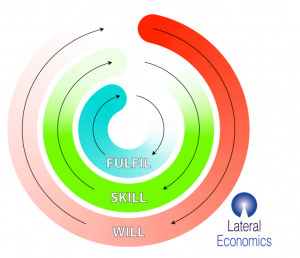

When policy problems are complex, we need to understand and learn from the front line. With desperately need to improve the early, middle and late stages of institutional learning and change-making, to enable successful policy development.
From the recent Mandarin article.
It's election season in Australia.
I can feel the announceables coming on; indeed whole focus groups of them.
Pilots make an easy announceable. They're cheap, they sound innovative and they'll be conveniently off the books by the time some new announceables are needed. Pilots are to policy what start-ups are to innovation: cheap, worthwhile and almost invariably around for a short time before they're replaced by new ones. And most of them are unsuccessful.
Innovation policy has a name for the problem. It's called the Valley of Death, and refers to all those byways and traps that must be navigated before the Good Idea can make it into a successful product. A similar valley of death bedevils innovation in government.
And while these problems are frustrating in markets, at least markets are an open system capable of being disrupted (as we say now) by competitors with enough nous and other resources to do so.
Innovators in government face a similar thicket of obstacles, but in a centrally planned system, it can be virtually impossible to get through -- because if you're a small new initiative, you've got few champions fighting for you, and plenty of people within the system to whom you're an inconvenience or worse.
Through thick and thin: Improving policy in Australia’s regions
These things came to mind as Lateral Economics was working on a report to the Regional Australia Institute, Through thick and thin: Improving policy in Australia’s regions. Yet just as Australia has managed some commercial start-up successes, a few Atlassians and Seeks, so too there are a few government innovations that have scaled -- although only one in regional policy.
Not only does this prove that it's possible, it helps us understand how such success might be replicated.
At least during the reform glory days from 1983 to 2001, Australia excelled at top-down economic policy reform. This included the setting of tax and benefit levels (whereby Australia has the most targeted welfare system in the world) and adapting existing infrastructure like the tax and benefits system in new ways, as we did with HECS and the Child Support Agency.
Scrapping stuff that probably never made economic sense -- like tariffs, shopping hours and the two-airline policy -- was also something we led the world in. However beyond this, we're coming to realise (aren't we?) that even back in the glory days we weren't so flash where problems are complex.
The obstacle course
When problems are complex, we need to understand and learn from what's happening on the ground.
Adapting language from anthropology, we call the former policy problem, which is amenable to top-down reform, ‘thin’, and the latter, more complex problem, ‘thick’.
Whereas thin problems can be effectively designed and managed from the top, for thick problems, institutional learning must travel up the chain of command as well as down -- from the outfield to the centre and also in the other direction.
However, there are profound institutional and cultural obstacles preventing this from occurring, and where it does occur, preventing it from being embedded or properly institutionalised.
The greater status given to policy-making compared with delivery is a central obstacle to achieving what must be achieved if small-scale variations and experiments in the field are to be learned from -- which is to say:
- assessed and understood; and
- scaled on their merits.
In our report, we anatomised these inadequacies in terms of the early, middle and late stages of the necessary process of institutional learning and change-making -- which we summarised using a rhyming triplet: Will -- Skill -- Fulfil

We found deficiencies of practice in each of these stages:
Will: Governments frequently announce their intention to introduce some new policy or approach. Then, poor attention to detail often follows and the initiative quietly dies. Sometimes little progress is made beyond announcement or some stated intention. On other occasions, a pilot proceeds and appears successful but is not continued further as priorities change.
Skill: Pilots, trials and other small-scale initiatives are often used to develop new skills and investigate the value of various new approaches. Some pilots have trialled integration of service delivery and funding streams between agencies -- one of the holy grails in ‘joined-up government’ -- but this has been very rare. More disconcertingly, the scaling of such learning into larger programs with learning feeding back to agencies has been rarer again.
Fulfil: For innovation to be truly ‘fulfilled’ in our lexicon, it needs to be grown to the appropriate size and to become incumbent -- embedded within organisational and political expectations and business-as-usual.
The Landcare example
We can think of only one example where this has occurred for regional Australia: Landcare. Landcare was a highly successful initiative in which a range of success factors coalesced:
- It had high-level political support throughout.
- This coincided with its being a very cost-effective and popular response to a policy and political enthusiasm of the time, ecologically sustainable development.
- It was not expensive and was seen by the government as saving money in a range of respects.
- The above factors led to early scaling, which was not difficult to do as the principles and administration of the program were relatively straightforward.
- It did not require any difficult cross-agency collaboration or funding.
Partly because of a political culture that valorises announceables, pilots and small-scale policy innovations are relatively easily established, but then tend to disappear, often irrespective of their merits, to be replaced by new announceables, many of which are also pilots.
The need for accountability: some recommendations
Governments urgently need to establish greater accountability for the extent to which the system as a whole supports a healthy process by which trials, pilot programs or just variations within existing programs are widely learned from and grown in scale and impact where appropriate. In light of this we offered the following recommendations:
- Existing regulatory ‘sandbox’ approaches offer some promise but risk repeating the mistakes of the past. Policy ‘labs’ such as NESTA, Y-Lab and the Auckland Co-Design Lab, offer worthwhile models for pursuing thick policy problems, within which regulatory ‘sandbox’ ideas could happily sit.
- As many of the issues relevant to regions span federal, state and local government, such bodies should have a federal remit. They should then work with governments at all levels and other stakeholders including users and the general public to make the thick journey to better policy and delivery.
- Where pilots are established, their monitoring and evaluation should be provided in a way that is:
- expert and collaborative with those in the field to help them optimise their impact; and
- independent.
- A unit like a behavioural insights unit could be a useful base from which to build such independent capability, ensuring the rigour of the process. But an additional objective would be the transparency of the project from outside. This will be important for the local community to be aware of the progress made. And this will assist the prospects of expanding small projects where they're generating strong benefits and embedding them in the community’s expectations, and so in the minds of politicians ultimately responsible for decisions on the projects’ destiny.
- There should be a register of such projects and small policy initiatives, with reporting each year by the auditor-general on the quality of the knowledge they have generated (and by implication the quality of the monitoring and evaluation being undertaken), their success or otherwise and, more importantly given the failings in the current system, in applying the lessons learned, including by adapting and growing the initiatives.
- It would make sense to limit such an approach on regional initiatives as a trial, though if the ideas in this report have merit, they should have a wider impact.
- An innovation fund should be established by the federal government to fund innovative programs that vary existing mainstream programs in ways that establish better knowledge about the impact of those programs under different conditions. Thus, for instance, one might trial more generous means-testing of welfare to understand the behavioural responses to such changes, and to optimise the impact of tapering welfare payments as people transition from welfare to work.
- We should tackle the dominance of policy over delivery in the values of public service beginning with an audit of the extent to which leading successful learning and innovation in policy delivery is considered an important qualification for promotion in the public service, and take concrete steps to improve perceived problems in this regard.
This article has been adapted from a report commissioned by the Regional Australia Institute. RAI's Regions Rising Conference will be held in Canberra on April 4-5.
interesting.
I think the main challenge in setting up some kind of institutional learning based on independent 'monitoring and evaluation' of small-scale initiatives in 'thick' areas is how to keep it cheap. An independent agency would have an incentive to make it expensive, such as via protocol-based measurement, formalised pilots and a whole raft of 'requirements' that those who try something would then have to fulfill. More likely than not, an independent organisation that would monitor and evaluate pilots and trials would end up discouraging them, particularly in a hierarchical place like Australia where such an organisation would immediately become a territory and moral grandstanding would be used to expand the territory.
So that's the big danger I think: how to do this in a cheap way that doesnt kill initiatives but helps them. An anology that comes to mind is IT services: IT helpers are really useful if they are embedded in the local teams, and they become a pain in the *ss when you centralise them and people have to 'log' their IT requests. The invariable problem is the manager of the central IT unit, who always wants to expand the territory by reducing actual help and orienting all the IT people towards his needs rather than those of the 'lower-down' units.
One would think there are institutional mechanisms for this. What you would want is embedded pilot-watchers who know how to feed up. Statisticians are a bit like this: every unit has a few and everyone agrees they are useful, but there are not enough of them in any place to form a tribe that disrupts anything (except if you put too many together like in the ABS which has essentially become wholly dysfunctional due to a variant of the territorial problem above).
I would say that one should trial with these self-learning systems. Have some medium-sized departments try out a few models on how to do this.
Having been involved in Landcare, I dispute the claim that it has been a success. What the Landcare groups is not evidence based and much of it is pointless. From an environmental perspective, some the groups are causing harm.
Thanks Hugo,
Any chance you can elaborate (I'm not sceptical, just interested). I would say that simply creating some sense of collective agency around such issues seems to me to be a good thing, even if that agency is sometimes or even often of little help. I'd be thinking that it doing positive harm would be rare(ish) but what would I know?
I have been involved in two Landcare groups over 20 years, one of which does some good work but only because it has one extremely knowledgeable and experienced state government employee who leads the group, as a volunteer.
However, the other Landcare group, which is closer to the norm, has very little expertise and nothing it does is strategic. Accordingly, it misidentifies rare native plants as weeds and sprays them with glyphosate, plants natives that get overrun by weeds and die out a couple years later etc..
But there are even worse groups that accidentally plant weeds, for example for a couple years one Landcare group planted the highly invasive weed, Juncus acutus, because they thought it was a native while surrounding groups continued to poison it.
Some Landcare refuse to use poisons but do not know how to control weeds without poison, so they sometimes cause massive soil disturbance and seed dispersal when they try to get rid of weeds. This can make the problem ten times worse. It would have been much better if they had kept their hands in their pockets!
I could give dozens more examples. The program really needs to be directed by state government employed experts in weed control and reveg etc... and subject to strategic planning. Local group autonomy is a feel good thing that rarely works in Landcare.